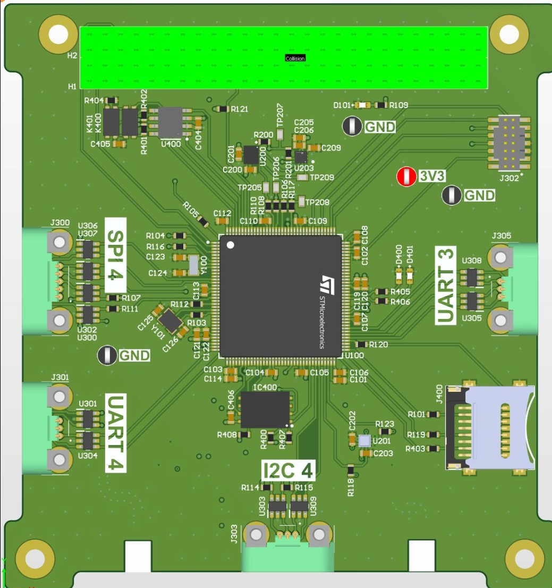
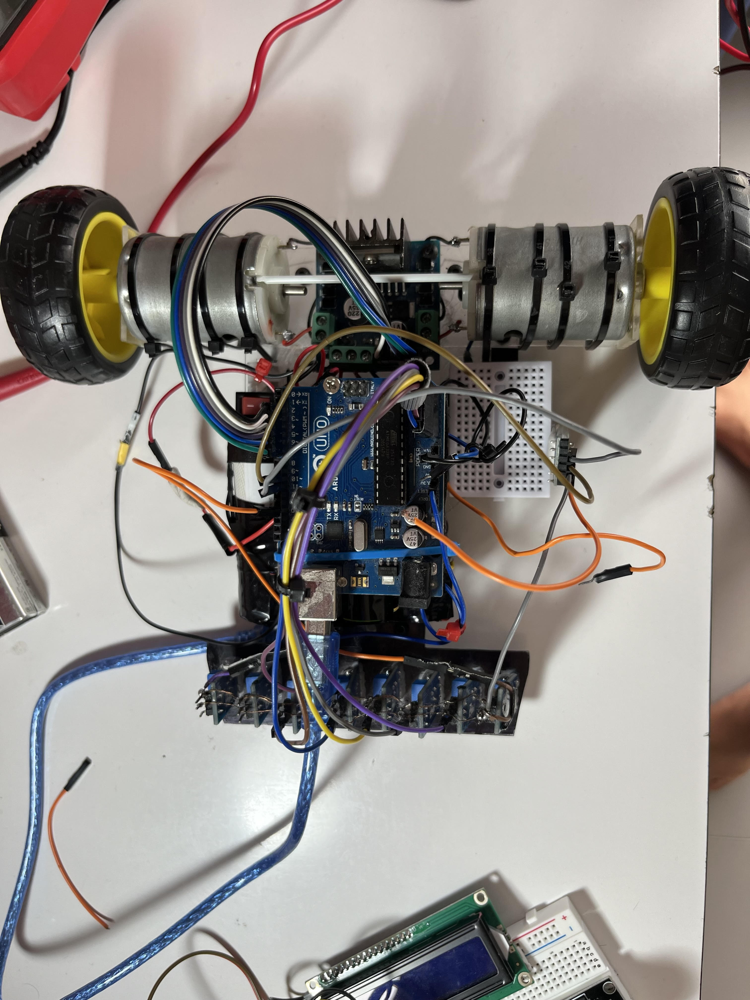

A collection of my hardware design, verification, and embedded systems projects
Built a hardware PWM controller in VHDL that lets a soft-core processor drive four hobby servos with 1.4° resolution and 0 timing jitter with fully autonomous operation on a DE10-Lite FPGA.
Designed a 64-bit calculator in SystemVerilog RTL with FSM-based control, synchronous resets, and a dual-bank SRAM interface for storing inputs and outputs.
Developed comprehensive UVM-style verification environment with driver/monitor/scoreboard components to achieve 99% code coverage. Completed synthesis, floorplanning, placement, and routing in Cadence Innovus using TCL to produce a full physical design layout (VLSI).
Built a hardware-based system in SystemVerilog to parse and validate network packets (Ethernet/IPv4/UDP) at 125 MHz with 1-packet-per-cycle throughput using AXI-Stream interfaces on FPGA.
Implemented IPv4 and UDP checksum validation, metadata extraction (MAC addresses, IP addresses, ports), and error detection for malformed packets.
Designed and routed the Attitude Determination and Control Systems board for the first collegiate two-stage rocket targeting the Kármán line. Features advanced sensors, robust data logging, and streamlined layout for precise attitude determination and reliable in-flight telemetry. Serves as the brain of the rocket with extended Kalman Filter for state estimation.

Developed an embedded arcade-style shooter on the ARM Mbed microcontroller platform in C/C++, interfacing with a color LCD for graphics, input controls, and audio peripherals. Implemented missile physics, collision detection, and score tracking optimized for a low-resource microcontroller environment.
Independent research on graphene supercapacitors to compare their efficiency with traditional EDLCs. The prototype demonstrated a 40% higher energy density under identical parameters. Won 1st place at a national science fair competing against over 3,000 students and 20+ schools. Showcased at the Oman American Business Center's Environmental Science Fair.
Won first place at a robotics competition at Modern College out of 500+ students in schools & universities across Oman. Designed the robot chassis using CAD and used IR sensors for line-following and an HC05 module to control the robot using a PS5 Controller through Bluetooth.
